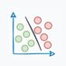

黄仁勋复职NVIDIA CEO，特朗普称是他说服了董事会后续
15 条帖子，合计浏览 861 万次
之前的报道：11月19日早间“黄仁勋表态愿回任，董事会在财报会上明确拒绝”
AI 芯片巨头 NVIDIA 的董事会日本时间23日深夜宣布，全票同意让创始人黄仁勋即刻恢复总裁兼 CEO 和董事职务，离他辞职不到两周。美国总统特朗普公开说是自己说服了董事会，美国议员和日本时间线上都有人质疑公司决定被政治左右。消息公布后 NVIDIA 股价当天收涨三成多，Elon Musk（特斯拉和 SpaceX 的 CEO）的一条相关帖子获得22万个赞。
- 此前
- 黄仁勋约两周前承认婚外情后辞职，其中一名女性被美国情报部门怀疑是中国间谍，中方否认。董事会几天前还拒绝了他回任的提议。 CBS、美联社
- 复职理由
- 董事会说和黄仁勋多次面谈后，认可他的坦诚和领导能力。董事会还说听取了美国政府高层的意见，确信他复职没有国家安全风险。 NVIDIA 官方
- 政府介入
- 特朗普对 CNBC 说，自己的介入“非常重要”，董事会“做了我们想让他们做的事”。他说前一天和黄仁勋谈过，政府向 NVIDIA 保证他回来没有国家安全问题。 美联社、日经
- 股价
- NVIDIA 股价盘中一度涨超35%，收盘涨约31%，仍低于上个月约239美元的历史高点。它带动标普500指数涨约4.7%，结束了7连跌。 路透、美联社
- 后续调查
- 黄仁勋下周要接受美国众议院三个委员会的问询。商务部同一天把被指向中国转运 NVIDIA 芯片的新加坡公司 Megaspeed 列入实体清单（没有许可就买不到美国技术），它的控股股东就是那名被怀疑是间谍的女性。 美联社、CBS、路透
补充来源：Nvidia board reinstates Jensen Huang as 、NVIDIA Board Reinstates Jensen Huang as 、Trump administration adds Megaspeed to t
认为顺序不对，应该等调查结束再复职，董事会的决定被政治轻易推翻，今后的调查里不排除再被解任。
村松 一之称 NVIDIA 当天市值增加超过1.1万亿美元，是美股史上最大的单日增幅。
 Sawyer Merritt
Sawyer Merritt指出 Colette Kress 一开始就被定为临时 CEO，本职是首席财务官，现在只是回到原职。
 NULL=RUN
NULL=RUN
Claude Ship上线，AI可按团队规则批准代码
3 条帖子，合计浏览 160 万次
开发 Claude 的 AI 公司 Anthropic 23日推出测试版 Claude Ship，让 Claude 审查代码合并请求（PR，开发者提交修改、请别人审核的单位），自己动手修问题，并在团队规则允许时直接批准合并。这意味着一部分代码改动可以不经人审就上线，官方开发者账号的发布帖获得1.2万个赞、约90万次浏览。同一天 Anthropic 还把连接器和技能合并成插件，并推出兼容零数据保留的滥用监测。
- 三个部分
- 代码审查 Code Review 已经正式上线，测试版的 PR Steward 负责修复失败的自动测试、合并冲突和审查意见，按设计不能批准或合并。测试版的 Claude Approvals 按团队写在代码库里的规则文件，决定自己批准还是交给人审。 Anthropic 官方
- 怎么用
- 开发者在 Claude Code 里输入 /ship，Claude 会推送修改、开 PR、审查并处理反馈。管理员也可以按代码库整体开启，官方建议先用只观察、不生效的模式试运行。 Anthropic 官方
- 费用
- 按 token（模型计算文字的单位）计费，管理员可以设花费上限，符合条件的企业版客户可以在2027年1月15日前领取至少1万美元额度。只支持 Team 和 Enterprise 方案、托管在 GitHub 上的代码库，开了零数据保留的组织用不了。 Anthropic 官方
- 插件
- 连接外部工具的连接器和教 Claude 新本事的技能合并成“插件”，已在 Free、Pro、Max 和 Ultra 方案上线，目录里有1万多个。Team 和 Enterprise 方案稍后开放。 Anthropic 官方
- 隐私
- 面向企业的零数据保留（服务端不保存请求内容）加滥用监测进入公开测试，能跨多次请求发现滥用，又不用保存数据。Anthropic 说这是和100多家客户一起开发的。 Anthropic 官方
谷歌编程工具重置额度，Pro用户可用Carbon后续
6 条帖子，合计浏览 74.7 万次
之前的报道：11月23日午间“开发者续议Gemini 4 Neon写作和应用体验”
参与 Google 编程工具 Antigravity 项目的 Google DeepMind 总监 Varun Mohan 24日宣布，因为各档位都在换新模型，所有用户的 Gemini 额度重置。付费 Pro 用户开始能用最高端的 Gemini 4 Carbon，便宜快速的 Hydrogen 向所有用户开放，这条帖子获得1万个赞。Google 同时开始向企业办公套件 Workspace 的用户推送 Gemini 4 Neon。
- 额度重置
- Antigravity 里所有用户的 Gemini 用量额度重置，理由是各档位都在升级模型。 Google
- 开放模型
- 付费 Pro 用户可以在 Antigravity 里用 Gemini 4 Carbon。Hydrogen 按之前的承诺向所有用户开放。 Google
- 企业用户
- Google 的 Chandu Thota 说，Gemini 4 Neon 正在推送到 Workspace 用户的 Gemini 应用。 Google
- 三款分工
- Google 官方说，Neon 用于复杂编程、分析推理和企业生产流程，在深度和效率之间取平衡。Carbon 处理最难、耗时最长的项目，Hydrogen 负责快速的日常任务。 Google 官方
称 Gemini 明天会开放不限量使用 Neon，并问大家要不要从 Claude 换过去。
Shakhzod Karimov
房价降而房租涨，都心3区三室户月租约44万后续
11 条帖子，合计浏览 8.7 万次
之前的报道：11月23日晚间“房产账号续贴降价，武藏小杉一套73平米不到9000万”
东京公寓挂牌价还在往下走，公寓估价服务 CAPS 23日贴出估算：10月都心3区（千代田、中央、港区）70平方米三室户的月租约44万日元，比去年同月涨4.5%。房产账号接着讨论买家改租房观望，还有中介说一些富人想赶在2027年富裕层增税前年内卖房。具体房源和中介的说法来自个人账号，没有官方统计。
- 房租
- CAPS 估算，10月70平方米三室户的月租，都心3区约44万日元，涨4.5%。东京湾岸约36万日元，涨5.7%，23区整体约31万日元，涨5.9%。 CAPS
- 为何租房
- 有用户转述中介的说法：需要住市中心的人不想在跌市里买房，改租房观望。转卖商和个人卖家很难把房子改成出租，所以出租房源没有跟着增加。 X 用户
- 年内抛售
- 有用户称中介透露，有一些富人希望年内把房子卖掉。2027年起针对超高收入者的最低税负制度加强，特别扣除额从3.3亿日元降到1.65亿日元，税率从22.5%升到30%。 X 用户、财务省
- 降价房源
- 有用户称池袋的 Brillia Tower 池袋挂牌价降到每坪约785万日元，去年同类房子多在2.5亿日元以上。文京区一套从2.4亿日元分两次降到约1.8亿日元。 X 用户
- 中介定价
- 有用户称大型中介常给卖家三档估价：试探价、行情价和快速成交价。大型中介挂牌价比低佣金中介高，可能只是卖家选了最高那一档。 X 用户
黎曼证明作者称“25万页”是玩笑后续
5 条帖子，合计浏览 25.0 万次
之前的报道：11月22日晚间“AI版黎曼证明登上NHK，百万美元奖金至少等两年”
Anthropic（开发 Claude 的 AI 公司）的数学家 Levent Alpöge 在 X 上发长文澄清，他之前说黎曼猜想证明的人类可读版“超过25万页”是玩笑。他也承认公开的 Lean（让电脑检查数学证明的编程语言）代码里有大量杂乱内容，只是能通过编译。这个数字此前被广泛当真，同一时期 Meta 首席 AI 官 Alexandr Wang 还把这份证明当作“超级智能正在到来”的证据。
- 25万页
- Alpöge 说“25万页以上”是玩笑，他觉得大数字很好笑，没想到大家当真。他不想给这道题配一份质量低劣的说明，所以只公开了 Lean 代码。 X 用户
- 代码质量
- 他承认 Lean 代码里“满是垃圾”，但能编译通过，对这方面的批评全部接受。他说出于种种原因很难清理，应该早点整理好。 X 用户
- 下一步
- 他说这次会更负责地把证明写出来。他估计里面大部分内容最后都用不上，可以大幅简化。 X 用户
- 他的重点
- 他认为这类论证的价值在于为建立新的数学定义提供素材。在他看来黎曼猜想本该很容易证明，真正的困难说明现有的数学框架还不够好。 X 用户
- 超级智能
- Alexandr Wang 22日在 X 发文说“超级智能正在到来”，接下来一年人类怎么做影响重大。他说很难想象人类能控制无限制自我改进的 AI，呼吁加紧安全和对齐研究。 半岛电视台、Fortune、The Next Web
梳理了 Alpöge 报告里的证明思路：把函数域上的 Stepanov 方法推广到整数，Claude 提出反复做“theta lift”来得到相当于提高零点重数的效果。
 Daisuke Okanohara
Daisuke Okanohara提醒数学家今后要从 Lean 证明里找出人能理解、又忠于原证明的抽象，这件事很容易被误导，并附上相关论文。
 Maxime Peyrard
Maxime Peyrard赞同有人提议办一份专门解读 AI 证明的期刊，认为数学家迟早需要一门解读学问。
 Joel Z Leibo
Joel Z Leibo
Switch 2破解机跑起PS2模拟器
3 条帖子，合计浏览 5.9 万次
破解后的 Nintendo Switch 2（任天堂2025年发售的主机）开始能跑其他主机的模拟器。开发者 Izmysh 公开了 Switch 2 用的 PS2 模拟器预览版，YouTuber Better Gaming 发视频展示用破解机玩 PS2 和 PSP 游戏，另一位开发者称 iOS 模拟器应用 GBDev 新增了 Switch 支持。这些都是个人账号的说法，而目前公开的破解方法已被任天堂的固件更新封住。
- 此前
- Switch 2 10月下旬第一次被破解，方法完全靠软件，要借助一款已下架的编程软件 SmileBASIC。游戏媒体 Kotaku 11月报道，任天堂已用23.5.0版固件把漏洞封掉。 Kotaku
- PS2模拟
- 预览版通过 IZ2S 运行，支持存档和最多4个手柄，代码放在 GitHub 上。开发者说重型游戏还会卡，《最终幻想》《女神异闻录》这类角色扮演游戏跑得不错，KaiHEN 版本稍后推出。 X 用户
- 实测
- Better Gaming 用破解机玩了一整天，跑了 PS2 游戏、Black Ops 1和2以及 PSP 游戏，也遇到很多次崩溃。 X 用户
- iOS上
- GBDev 的开发者称新版加入了 Switch 模拟，不需要即时编译、越狱或电脑，免费。新版23日刚提交审核，预计24小时内上架 App Store。 X 用户
快讯
日本
日经：日野自动车2027年度年休从121天增到125天，被认为是日本车企里最多的。
日本経済新聞 名古屋編集部日经分析2025年访日客：观光目的的每个都道府县平均约198万人次，人均消费约7.7万日元。
日経 データ・調査報道快递放门口即算交付的国交省指针案20日起征求公众意见，计划年内正式定案。
 日本経済新聞 電子版
日本経済新聞 電子版长崎市把文件误寄给同名同姓的人，对方把住址等个人信息发到社交媒体，原收件人不满市里不管。
 ライブドアニュース
ライブドアニュース
科技和 AI
有用户称这届技術書典（技术同人书展）很多作品封面和正文明显是 AI 生成。
 ゆみや
ゆみやOpenAI 把为日常对话优化的 GPT-6.2 Sol 放进 ChatGPT 聊天页，先向 Plus、Pro 和企业用户推送。
 Tibo
Tibo有用户称 OpenAI 的 dot 开始在欧盟推送，官方还没有确认。
 Chubby
ChubbyArena 智能体榜：Meta 的 Muse Ember 得1093分，每任务成本约2美分，比 GPT-6 Luna 低75%。
 Arena.ai
Arena.ai非官方更新日志称 Claude Code 2.1.331 删掉了高风险操作确认，智能体可能自动执行以前被拦的步骤。
Claude Code ChangeloClaude 手机应用改版，加入新的标签栏，iOS 和安卓版开始向所有用户推送。
Mike KriegerAnthropic 方面花两个月访谈58家客户（从牙科诊所到对冲基金），发布 AI 怎样改变工作和组织的报告。
 Peter McCrory
Peter McCroryVercel 的 AI 网关推出经独立机构审计的零数据保留，首批合作方的审计报告预计12月8日前发布。
ModalGoogle 搜索的 AI 模式可选择连接 Google Wallet 读取消费记录，Drive 和 Gemini 应用几周内跟进。
 Google
GoogleGemini API 新增文件切片，开发者可以只让模型读取指定页、表格范围或音视频片段。
Google AI StudioOpenCode 2.4.0 新增自动化工具，智能体可设定时任务，或在 MCP（AI 接外部工具的协议）事件发生时运行命令。
OpenCode有用户称 MemTensor 公开的 MemT-1.0-Flash 能把记忆存进模型权重，已上 Hugging Face。
となりのトトノ有用户称 Inkling 2 Mini 在 MacBook Pro 上占用不到一半内存，建议16GB以上内存的人试试。
 Alex Finn
Alex FinnPhonic 1.1 以89.1分登上 Artificial Analysis 语音对语音榜第一，超过自家上一代。
Artificial Analysis机器人 AI 公司 Embo 获风投 a16z 领投的1.1亿美元种子轮，团队做过 Dreamer 等世界模型研究。
Pieter AbbeelX Square Robot 开放机器人模型 WALL-OSS-1.0 的 API，在312项真实任务上零样本成功率约55%。
Elias VanceKaggle 新赛题：做一个能玩32款浏览器游戏的离线智能体，奖金5万美元，2027年2月22日截止报名。
 Kaggle
KaggleNeurIPS 2026 论文复现黑客松11月30日至12月13日举行，29日前报名，前1000人各得50美元模型额度。
 Gradio
GradioGoogle DeepMind 12月1日至10日开4节直播课，讲部署 Gemma 4 推理、混合路由和微调编程智能体。
 Google Cloud Tech
Google Cloud Tech代码编辑器 Zed 宣布把自家界面框架 GPUI 拆成独立的代码库。
 Zed
Zed有开发者着手让图形库 Skia 在网页的 WebGPU 上运行，网页此前是唯一跑不了的平台。
 William Candillon
William CandillonTOP500 超算榜的500台全部运行 Linux，微软自家排第7的 Eagle 也用 Ubuntu 22.04。
 Ayaan
Ayaan9to5Mac：iOS 27.3 给六个 iPhone 自带应用加入了新功能。
9to5Mac传苹果12月1日推出红色版 HomePod mini 2，只换颜色，不加功能。
AppleTrackStarlink Mini 2 在美国接受邀请预订，按键约60秒联网，电池最长4.5小时，也能用 USB-C 供电。
 Starlink
Starlink有开发者展示在 M5 MacBook Air 上原生运行 Windows，并支持 D3D11 图形接口。
 Miguel C
Miguel C有开发者开源了在 Linux 上跑苹果 iOS 模拟器的项目，不用 Mac，AI 智能体能在云服务器上测 iOS 应用。
 Armaan Jain
Armaan Jain开发者 Kit Langton 发布 macOS 窗口管理器 Spaceman，并放出演示视频。
Kit LangtonDabbleCAD：可离线使用的开源 3D 建模工具，可替代 Tinkercad。
adafruit industriesJunction：开源的多人实时协作版 KiCAD（电路板设计软件）。
adafruit industriesNginx UI：开源网页面板，可编辑并安全重载 Nginx 站点配置，自动备份并对比版本。
GitHub Projects Comm有用户称 Bambu Studio 源码按 AGPL 公开，能自行编译加无头打印，但网络插件不公开，装插件时会被拦。
NULL=RUNSparkESP32 开源：用不到40美元的 ESP32 小屏显示 DGX Spark 的 CPU、GPU、内存、温度和功耗。
Todd Dailey有用户借 Claude 破解遥控器，读到了设备状态，但修改状态被 Claude 的限制拦下。
 koudai
koudai有用户称 EHOMEWEI 触摸屏在 macOS 上只被当成鼠标，打算用 Tab5 做 USB 中转再自写驱动。
 らびやん
らびやん有用户谈 XREAL AURA 日常使用：能用安卓应用，画质比 Quest3 好，但视野窄，计算盒容易发热。
 あるしおうね
あるしおうね有用户因为背不动1公斤以上的笔记本，今年改用 Linux 台式机，写博客分享经过。
 a-know
a-know芯片设计顶会 ISSCC 2027 公布议程，有研究者称自己团队有3篇论文入选。
 arutema47
arutema47Evernote 搜索技巧：组合 tag:、intitle:、created:day- 和 -tag:，能快速缩小笔记范围。
EvernoteDocker 推出 AI Governance，限定 AI 智能体能在哪运行、能用哪些工具，并留下审计记录。
 Docker
DockerAmazon Connect 允许管理者切换前先测试新的 AI 模型版本，保持自动评估打分一致。
What's New on AWS有开发者做了 Grok Bot 模板“DEAL HUNTER”，每隔几小时搜网上的黑五优惠并通知用户。
 Elon Musk
Elon MuskModal 发布关于开源推理的纪录片，SGLang、vLLM 等开源项目的成员出镜。
 Charles
CharlesKDnuggets 推荐5门免费 AI 课程，包括 Labonne 的 LLM 课程、LLM Zoomcamp 和 Hugging Face 课程。
KDnuggetsfreeCodeCamp 发布19小时数据分析课程，涵盖 Python、Excel、SQL、Tableau 和 Power BI。
 freeCodeCamp.org
freeCodeCamp.orgfreeCodeCamp 发布面向机械工程师的 Python 课程，用 NumPy、Pandas 和 Matplotlib 做案例。
freeCodeCamp.orgfreeCodeCamp 教程：用 Python 写 Discord 机器人，学用环境变量管理密钥和用 SQLite 存数据。
freeCodeCamp.org文章整理 AI 智能体在生产环境里出错的7种方式，以及每种怎么及时发现。
 Machine Learning Mas
Machine Learning Mas文章称 AI 智能体又碰上了分布式系统里的老问题“双写”（同时写两个系统导致数据不一致）。
Bilgin Ibryam文章介绍用小型信息抽取模型给智能体做校验，它给出的每个答案都能指回原文出处。
 elvis
elvis欧洲电商 Zalando 的工程博客介绍用 RAG（先检索资料再生成回答）循环改进来自动化数据接入。
 Robin Moffatt
Robin MoffattLangChain 的 Harrison Chase 撰文介绍内部智能体共用的学习循环，他称之为“知识工厂”。
 LangChain
LangChain论文：把多个强化学习专家蒸馏成可组合的软提示，用于持续后训练（加州大学圣巴巴拉分校和卡内基梅隆大学）。
fly51fly论文 Model Carving：训练能自己优化网络结构的 Transformer（哈佛和纽约大学）。
fly51flyGoodfire 论文：把神经网络内部的几何结构当作训练信号。
fly51flyAdafruit 教程：用 west 工具构建 Zephyr 实时操作系统的 LED 闪烁示例。
adafruit industriesReal Python 教程：怎样在 Python 里实现二分查找。
 PyCoder’s Weekly
PyCoder’s Weekly博客文章讲怎样对正则表达式和函数求导。
 Computer Science
Computer Science化学机器学习论文 Pharos：学习大规模控制罕见事件。
 Machine Learning in
Machine Learning in Google Cloud 更新安全管理课程，讲权限管理、虚拟私有网络和零信任。
 Google Cloud
Google Cloud微软研究院汇总近期研究：多智能体的动态专家剪枝、降低大模型服务成本的语义缓存和 GraphRAG Zero。
 Microsoft Research
Microsoft Research微软介绍 Windows ML，用一个框架让本地 AI 模型在 CPU、GPU 和 NPU 上运行。
 Windows Developer
Windows Developer有开发者在头显上做了“空间暗房”，直接解码佳能双鱼眼 RAW 照片并实时预览调色，全在头显上运行。
 Brad Lynch
Brad Lynch有用户整理称伯克利 Pieter Abbeel 的实验室走出了 OpenAI、Perplexity、Physical Intelligence 等公司的联合创始人。
Martin
游戏
任天堂 USB Wi-Fi 连接器发售21周年，它插在联网电脑上，让 DS 通过电脑连上网络。
 KAZTENDO
KAZTENDO有玩家称在实机上以小孩形态通关了森林神殿，可能是世界首次。
いかぼうずXbox 官方黑色星期五促销已经开始。
 XBOX
XBOXUnity 开发博客：Owlchemy Labs 为 XREAL AURA 做 Hyper Visor 时，用分离的物理场景和模板缓冲做传送门。
 Unity for Games
Unity for Games
钱和房产
日经：公平交易委员会9月查处关东公寓大修缮围标，约40家公司涉案，连本应帮业主的顾问也参与抽成。
日経 データ・調査報道西新宿三丁目约230米高的双塔住宅再开发，12月开始拆除旧楼，计划2028年度动工新建。
 中谷幸司
中谷幸司港区パークコート赤坂檜町ザ タワー一套123平方米两室户挂约9.9亿日元，每坪约2660万。
 トリノミアル
トリノミアル志木站旁的プラウドシティ志木本町每坪从新房时约225万日元涨到约300万，76平方米从4500万台涨到6400万台。
 マンションマニア
マンションマニア志木一栋1999年建、土地租期还剩约23年的公寓，每坪从新房时约130万日元跌到约95万。
マンションマニア日经介绍买二手房前可做建筑状况调查，合格后能加瑕疵保险，买后发现缺陷有补偿。
 モノリス・キャピタル
モノリス・キャピタル横滨ザ・タワー横浜北仲的46至51层是星野集团酒店，夹在住宅楼层中间，有用户称同类楼全国约3栋。
公務員絶対辞めるマン有用户称没订阅的人先买290日元的月付方案，就能看到 AI Pro 年付半价约1.45万日元，先行优惠到26日。
ぽぽ美国黑五：Apple Watch Series 12 和 Ultra 4 降价100美元，其他型号最低179美元。
9to5Mac港区札の辻再开发的步行天桥工程和 SIX WAKE TAKANAWA 的施工现场照片（11月3日拍摄）。
再開発調査兵団
生活
ビックカメラ（家电量贩店）2027年福袋预约还剩2天，MacBook Air、无反相机等多款抽签倍率已超100倍。
 モバハン
モバハン有用户称和电脑品牌マウスコンピューター的购机纠纷闹上法院，26日在东京简易法院首次开庭。
 @Gamercocoa
@Gamercocoa一篇曾负责大学设置审批的人写的博客，整理退休后转当大学教员的注意事项，大学职员称写得很准。
high190泡沫期由住宅公团（当时的公营住宅机构）分售、1988年入住的ロビーシティ相模大野五番街，楼梯间带挑空和门廊。
公団ウォーカー 照井啓太电脑周边厂商サンワ纵插横插、缝隙里也能插的“革命插座”获2026年度好设计奖的焦点奖。
 サンワダイレクト
サンワダイレクト有用户算过，Mac mini 选1TB硬盘就超过20万日元，再加显示器约10万，决定先等促销。
ろくちゃん
值得单独看的帖子
- 温度设0为何输出仍会变
解释大模型温度为0时输出仍不一致的真正原因：服务器批大小变化改变了浮点加法顺序。还给出 Thinking Machines 的实验数据和批不变内核的速度代价，适合面试准备和排查推理不确定性。

Daily Dose of Data S，赞 208，含视频 - TeX实时预览讲稿和编辑器
TeXConf2026 上“实时 TeX 预览”演讲的资料已在 GitHub 公开，带这项功能的编辑器 TeX64 可以直接下载试用。
 KKTeX，赞 1,225，含视频
KKTeX，赞 1,225，含视频 - 免费Blender动漫头发插件
HairMesh for Blender 在头部画曲线就能生成以四边形为主的动漫风头发网格，可保留曲线后改，支持对称编辑和厚度、扭转、卷曲调整。
 CGbox，赞 4,671，含视频
CGbox，赞 4,671，含视频 - vLLM在K8s上的生产部署栈
vLLM Production Stack 用 Helm 在容器编排平台 Kubernetes 上部署可扩展的大模型推理，自带请求路由、按模型负载均衡和 Grafana 监控面板。
Kube Architect，赞 71，含图 - 按有用度检索智能体记忆
Jetriever 论文用模型给每条记忆打“有没有用”的分，替代相似度检索，在 InMind 测试上排第一的结果约85%命中，帖子列出方法、结果和每次检索成本。
 Kalyan KS，赞 30
Kalyan KS，赞 30 - 关键词检索选工具不输嵌入
工具多到塞不进提示词时，文章对比了怎样让智能体选对工具，发现关键词检索能追平8B嵌入模型，附可复现代码。
 Towards Data Science，赞 1
Towards Data Science，赞 1 - RAG漏掉编号类细节的解法
分析 RAG（先检索资料再生成回答）系统里的嵌入检索为什么会漏掉硬件型号、编号这类关键字，并介绍怎样用一种1994年的经典检索算法补上。
Towards Data Science，赞 4 - 计算机系统与AI经典书单
一个整理了计算机、系统和 AI 领域好书的网页书架，适合挑下一本要读的技术书。
 Vineer，赞 1,393，含视频
Vineer，赞 1,393，含视频 - Bambu Lab大学免费入门课
3D 打印机厂商 Bambu Lab 的免费在线课程，买了或准备买 Bambu 打印机的人可以系统学一遍基础。
NULL=RUN，赞 414 - 大企业给AI喂上下文的经验
根据数据平台 Hex 的2500多家客户的观察，说明表多、系统多的大企业为什么不能把上下文全塞给智能体，以及检索和自学习两个方向。
Barry McCardel，赞 41